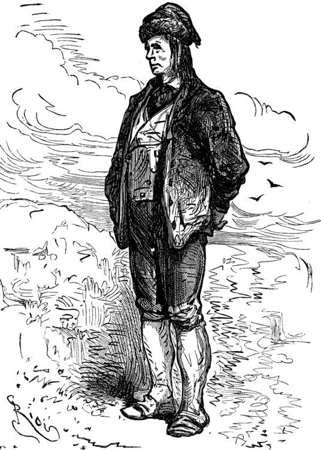
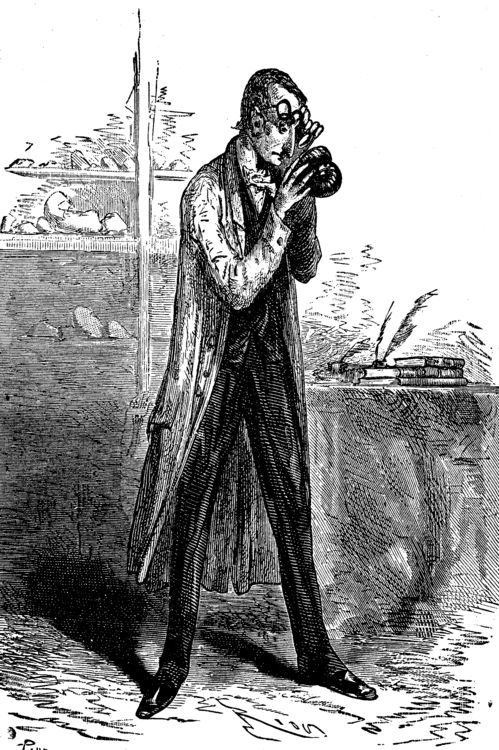
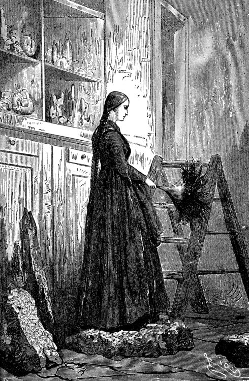

 Lidenbrock is Axel's uncle and mentor, a man who works as a professor in geology and mineralogy.
He is so famous that people come from around the world to attend his lectures. Professor Lidenbrock is hardworking and optimistic, never giving up on the journey to the center of the Earth.
He is also stubborn, prideful, and single-minded in his endeavors. After the journey, he becomes even more renowned.
Hans:
Hans is the Icelandic guide who accompanies Axel and Lidenbrock during their journey to the center of the Earth.
He is a calm, wise, stoic man, and does not talk much during the trip. He also saves the lives of the entire adventure party numerous times.
Axel:
 Professor Lidenbrock's nephew and assistant, Axel is the protagonist and narrator of the story. Axel lives with his uncle because his parents died when he was young; his uncle decided to take care of him in their stead. He loves working with Lidenbrock and learning about Earth and its minerals. When Lidenbrock decides to go to the center of the Earth, Axel tries to stop his uncle from embarking but eventually decides to take part in Lidenbrock's adventure. Throughout the narrative, Axel is pessimistic about the course of the trip, which he believes will end in his demise. He is somewhat naive, excitable, and anxious.
Arne Saknussemm:

An alchemist and scholar from the 16th century, Saknussemm possessed the old Icelandic book before Lidenbrock owned it; She wrote on parchment in a secret code that was meant to be deciphered. Saknussemm went to the center of the Earth and recorded instructions on how to reach it. She was persecuted for heresy and his works were burned in 1573.